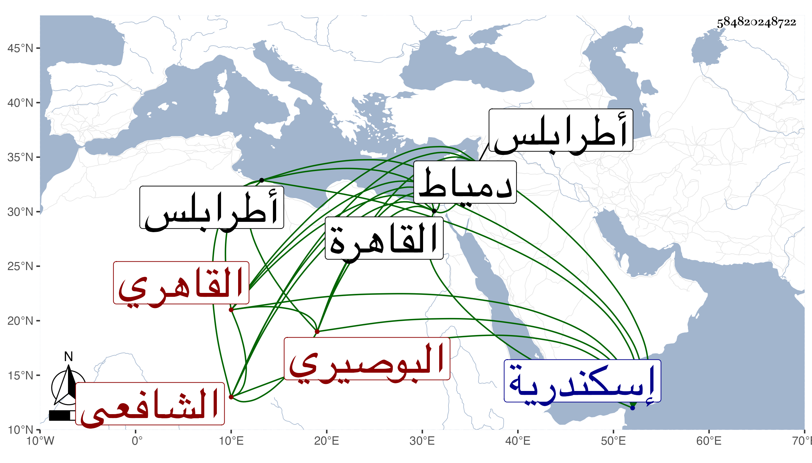

0902Sakhawi.DawLamic.ITO20230111-ara1.EIS1600.584820248722
Biography ID: 584820248722
988
محمد بن أحمد بن أبي بكر بن إسماعيل ناصر الدين ولقبه بعضهم نور الدين أبو الفتح بن الشهاب البوصيري ثم القاهري الشافعي الماضي أبوه ويعرف بالبوصيري . ولد في خامس عشري رجب سنة خمس عشرة وثمانمائة بالقاهرة ونشأ بها فحفظ القرآن وتقريب الأسانيد للعراقي ومختصر المتباينات لشيخنا والنخبة له وألفيتي العراقي في الحديث وفي السيرة والجرومية والشذور وتنقيح اللباب للولي العراقي وعرضه عليه بل عرض على جماعة فمنهم ممن أجاز له النجم بن حجي والشمس الشطنوفي والعلاء البخاري والتقي الفاسي وخلق وسمع على الزين الزركشي ورقية الثعلبية والنور الفوي سمع عليه ختم السيرة لابن هشام وشيخنا ومن لفظ الشهاب الكلوتاتي وأحضر في الثالثة من لفظ الولي الأول من أماليه وعليه الثلاثيات وبعض الصحيح وفي الشهر السابع من الخامسة على الشرف بن الكويك سداسيات الرازي وألبسه الزين الخوافي الطاقية ، وأجاز له في سنة ست عشرة فما بعدها خلق سوى من تقدم كالعز بن جماعة والجمال عبد الله الحنبلي والشهاب المتبولي والمجد البرماوي وحماد التركماني والجلال البلقيني والجمال بن ظهيرة والصدر السويفي وأبو هريرة بن النقاش والفخر الدنديلي والنور والشمس البيجوريين وقاري الهداية وغانم الخشبي وأبي القسم العبدوسي والشمسين الشامي والحبتي ومن أوردته في المعجم وقد حج مرارا أولها في سنة اثنتين وأربعين وسافر للجون صحبة الأمير يشبك الفقيه ثم لقشتيل وغيرها ودخل إسكندرية ودمياط وطرابلس ولقي بها ابن مزهر شيخها وتشاغل بنسخ تصانيف أبيه وغيرها مع نقص بضاعته ومزيد فاقته وانجماعه عن أكثر الناس وإقامته بالحسنية غالبا وخبرته باللسان التركي وقد قصدني مرارا وأجاز في بعض الاستدعاءات وحدث بأشياء ولفاقته كان يبر .
